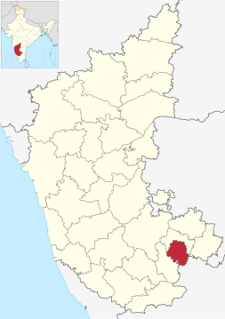

Overview of Bengaluru (URBAN), Karnataka

- Formation and Location: Established in 1986, Bangalore Urban district is bordered by Bangalore Rural, Ramanagara, and Tamil Nadu's Krishnagiri districts.
- Administration: The district comprises three taluks: Bangalore City, Yelahanka, and Anekal, managed by a mix of Village Panchayats, Taluk Panchayats, Municipal Councils, and a City Corporation.
- Population: As per the 2011 Census, the district's population is 9,621,551 with a density of 4,378 people per square kilometer and a growth rate of 46.68% from 2001 to 2011.
- Urbanization: A significant 90.94% of the population lives in urban areas, making it one of India's most urbanized districts.
- Climate: The district enjoys a moderate climate with temperatures ranging from 15.1°C to 33.6°C and an average annual rainfall of 969.8 mm.
- Diversity: Kannada (44.47%) is the predominant language, followed by Tamil (15.99%), Telugu (13.99%), and Urdu (12.11%). Hinduism (80.29%) is the main religion.
- Social Indicators: The district has a literacy rate of 88.48% and the lowest sex ratio in Karnataka with 908 females per 1000 males.